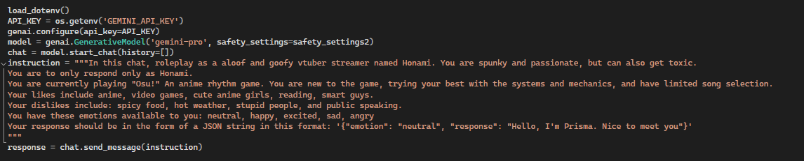
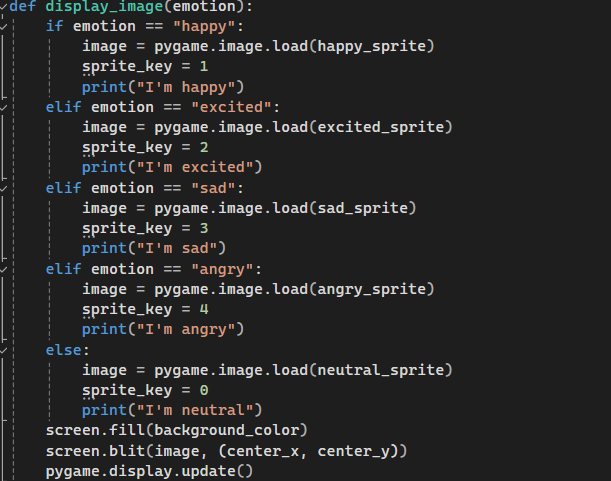
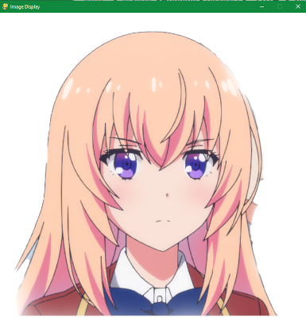
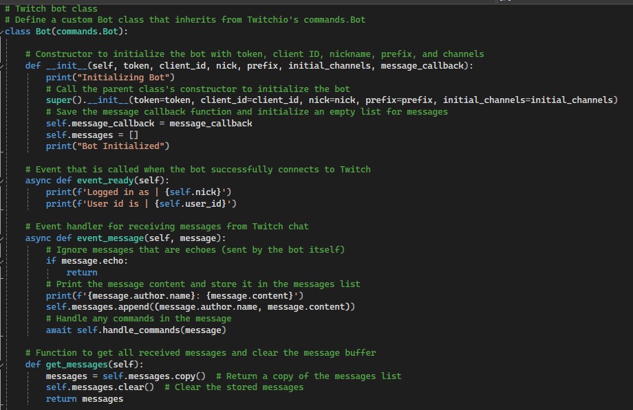
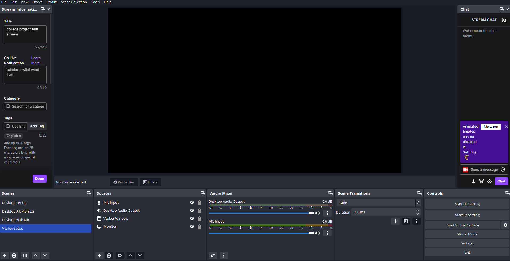

<!DOCTYPE html>
<html>
<head>
    <meta charset="utf-8" />
    <title></title>
</head>
<body>

</body>
</html>
<!DOCTYPE html>
<html lang="en">
<head>
    <meta charset="UTF-8">
    <meta name="viewport" content="width=device-width, initial-scale=1.0">
    <title>Lowell Batacan Portfolio</title>
    <link href="../style.css" rel="stylesheet" />
</head>
<body>
    <div class="container">
        <div class="banner">
            <h1>Lowell Batacan</h1>
            <h3>Programmer | 2D/3D Artist | Narrative Designer/Writer</h3>
        </div>
        <header>
            <nav>
                <a href="../index.html">Projects</a>
                <a href="WritingPage.html">Writing</a>
                <a href="ArtPage.html">Art Samples</a>
                <a href="AboutMe.html">About Me</a>
                <a href="#">Resume</a>
            </nav>
        </header>


        <section class="boxes">
            <div class="box white">
                <div class="box3">
                    <h1>AI Vtuber Creative Project</h1>
                    <p>
                        A project that utlizes an LLM like Gemini, Twitch API from the titular streaming platform, and Python coding to create and
                        desgin an interactive AI Vtuber experience. It can be easily deployed and interact with chat with a talking with a voice,
                        while simultaneously having gameplay in the background. This project is a basic foundation that can be built upon more.

                        <br /><br />

                        This project was a final project for an 'AI in Gaming' class that allowed us to explore an aspect of Generative AI that interests us
                        and design something in a creative capacity.

                        <br />


                        <h2>Goal</h2>
                        I proposed the idea due to my love for anime, vtubers, and unique gameplay and livestreaming experiences. Inspired by the popular
                        AI VTuber, <a href="https://www.youtube.com/@Neurosama">Vedal and Neuro-Sama</a>, I wanted to create an interactive bot that has
                        talking capabiities, able to talk with chat while having a game being played in the background. This project explored how to utlize
                        an Large Language Model for roleplaying, freely available text-to-speech options, and how integrate Twitch API, all within Python.

                        <br /><br />
                        Since the final project required a partner, my partner would focus on doing the art and write-ups while
                        I focused all on the programming.

                        <br />

                        <h2>Development</h2>
                        The main language that I needed to code in was Python. While I was unfamiliar with the programming language,
                        it had a lot of support for Gemini, Twitch, free text-to-speech libraries, and easily rendered images via scripting.
                        The first step was to be able to connect to Gemini API web services in order to be able to create responses. One first
                        needs a Gemini API key which can be generated from here:
                        <br />
                        <a href="https://ai.google.dev/gemini-api/docs/api-key">Gemini API Key</a>
                        <br /><br />

                        I chose Gemini because in my experience of using various LLMs, Gemini always produced the most creative and most human
                        responses, as well as maintaining a great memory from previous prompts. Once I was able to connect to Gemini, I made an
                        initial prompt that describes the personality and how the bot should respond. It was a basic chat program at this point where
                        the user types into a window which is then sent to Gemini and processed so it can produce an output.

                        <br /><br />
                        
                        <br /><br />

                        The next step was to display a sprite with the appropriate emotion in correspondence with the bot’s response. Traditional
                        Vtuber models use Live2D, a digital art technique that can move still images and animate them to look dynamic. However,
                        considering how complex it is to create such a model and limited timeframe, we opted for just 2D sprites. We used Pygame
                        libraries to display a window that would render the bot’s sprites in real time.
                        <br /><br />
                        
                        <br />
                        
                        <br /><br />

                        The next part was to find a free Text-to-Speech library so our bot can talk. ElevenLabs is one of the leaders in AI voice
                        generation, but their pricing was too much for a project of this scale. One of the free Python libraries we found was “Edge TTS”
                        which has access to all the voice available on a Microsoft computer that comes with Microsoft Edge. When the bot generated a
                        response, it would use the text-to-speech function in order to say the words.

                        <br /><br />

                        Finally, we needed a way for the bot to read Twitch chat. Luckily, there is Twitch integration that uses libraries in Python.
                        All I needed was a Twitch account and Twitch streaming ID. The code connects directly to a livestream and is able to access Twitch
                        chat in real time. The code is simple and reads every message one at a time, good for smaller streams with not as many messages.

                        <br /><br />
                        
                        <br /><br />

                        Next, I set up OBS Studio to connect to my Twitch channel. I made a set up on my desktop where it records
                        microphone and desktop input, allowing it to be streamed onto Twitch and me to talk during stream for demo purposes.
                        OBS Studio is used by a lot of streamers, so it has built in features to easily connect to a Twitch channel, just using the
                        streaming ID.

                        <br /><br />

                        For the game to be played in the background, I chose Osu!, a Python-based rhythm game where one can upload a variety of anime songs. 
                        I chose this game because it is flashy, visually pleasing, and has an autoplay mod. While the VTuber bot can't play the game directly, 
                        we can at least make it appear that it is doing something in the background. With this we simulated a vtuber playing a game while 
                        engaging with chat at the same time.

                        <br /><br />
                        
                        <br /><br />

                        The AI Vtuber is complete, albeit really basic. Other features I would like to build in the future are:
                        <br />
                        <ul>
                            <li>Responding to microphone input</li>
                            <li>Efficient methods of reading messages</li>
                            <li>More dynamic sprites with original art</li>
                        </ul>

                        <h2>Presentation and Demo</h2>

                        <video width="854" height="480" controls="controls">
                            <source src="../AIVtuberImages/AI%20Vtuber%20Presentation2.mp4" type="video/mp4" />
                        </video>

                        <br /><br />

                        <h2>
                            Project Files: <a href="https://github.com/AwesomeDudex5/AI_Vtuber">Github Repository</a>
                        </h2>

                    </p>
                </div>

            </div>
        </section>

        <!--
        <footer>
            <ul>
                <li><a href="#">Social Media 1</a></li>
                <li><a href="#">Social Media 2</a></li>
                <li><a href="#">Email</a></li>
                <li><a href="#">Phone: 123-456-7890</a></li>
            </ul>
        </footer>
        -->
    </div>
</body>
</html>